KiCadで自動配線
概要
自動配線ツールを使おう
KiCadが流行ってきて、使う人が増えてきている。
しかし、自動配線ツールを使っている人は少ない。
それでははもったいない！！
今回は自動配線ツールの使い方を説明する。
自動配線と手動配線の使い分け
自動配線だとなんか心配？
これを読んでいる方の中には、「自動配線なんて使い物にならない。自分でやるのが一番」と思っている人もいるだろう。
しかし、それは違う。自動配線と手動配線を上手く使い分けることで、最高の作品が出来上がるのだ。
どう使い分けるのか
電源周りやアナログ回路、高周波通信回路などはあらかじめ手動配線で行っておく。
あとは余ったデジタル配線を自動配線ツールに任せる。
これなら電気的特性を考慮しつつ、効率的に作業をすることができる。
配線のコスト(重み)という考え方
片面基板でも大丈夫
片面基板(切削基板など)を使うとき、自動配線ツールは一般に使いにくい。なぜならば、片面限定配線にすると、「配線不可能」になり、両面配線にすると切削基板では作成できないからだ。
しかし、僕の使っている自動配線ツールには、「コスト」という考え方がある。
配線にコストをつける
表面配線のコストを100にして、裏面配線のコストを1にすれば、自然とコストを下げるために裏面配線が優先され、切削基板にぴったりの基板が出来上がるのだ。
また、ビアにもコストがつけられて、できるだけビアを減らすということもできる。
とても柔軟なのだ。
自動配線ツール使用の流れ
- KiCadで回路図を書いて部品の割り当てを行う。(いつも通り)
- 部品の配置を行う。(いつも通り)
- 重要な配線を手動で行う。(いつも通り)
- KiCadから自動配線用にファイルを出力する。
- 自動配線ツールでそのファイルを読み込み、自動配線を行う。
- 配線結果をKiCadに取り込み完成！
自動配線ツールのインストール
必要なもの
- 自動配線ツール：Freerouting.exe
- NetBeans 8.1
- Jave Development Kit 8 (JDK8)
以下からダウンロードできます。
Freerouting
Netbeans with JDK8
インストール
- ダウンロードしたNetBeans with JDK8をインストールします。
- Freerouting.exeはインストールする必要はありません。使うときに起動するだけです。
使い方
まずは部品を配置する
KiCadでいつも通りにできるだけ配線が楽になるように部品を配置していきます。
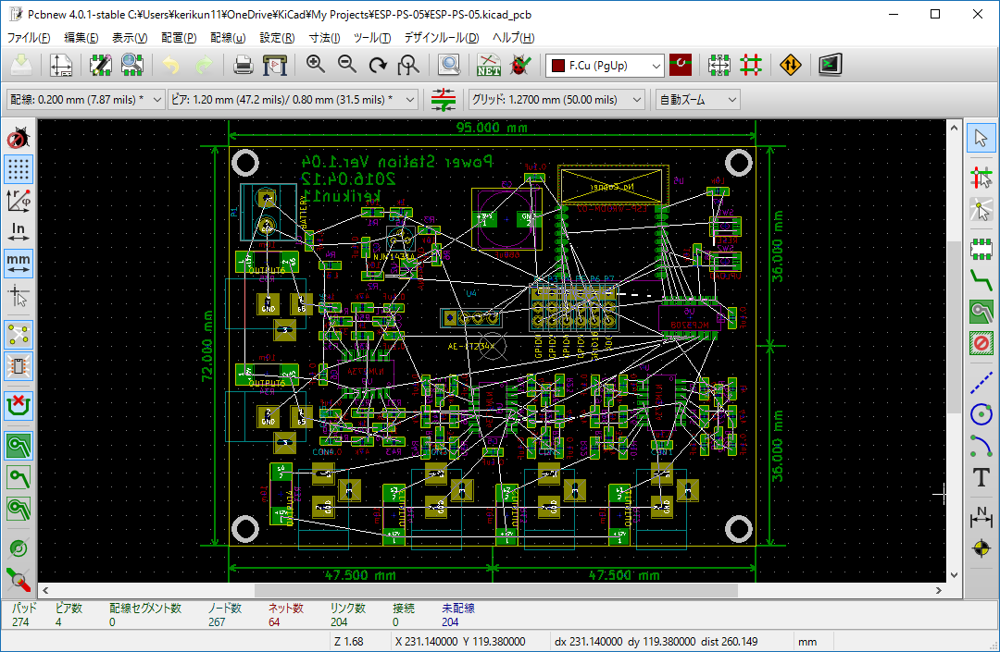
重要な配線を先に行う
電源回り、アナログ回路、高周波通信回路など、必要があれば手動で配線しておきます。
もちろん、全部自動配線に任せてもOK
配線情報をdsnファイルに書き出す
- 黄色のアイコンの
外部ルータ「Freerouter」とのファイル交換をクリックする。 現在のボードを”Specctra DSN”ファイルへエクスポートを押してdsnファイルを作成する。
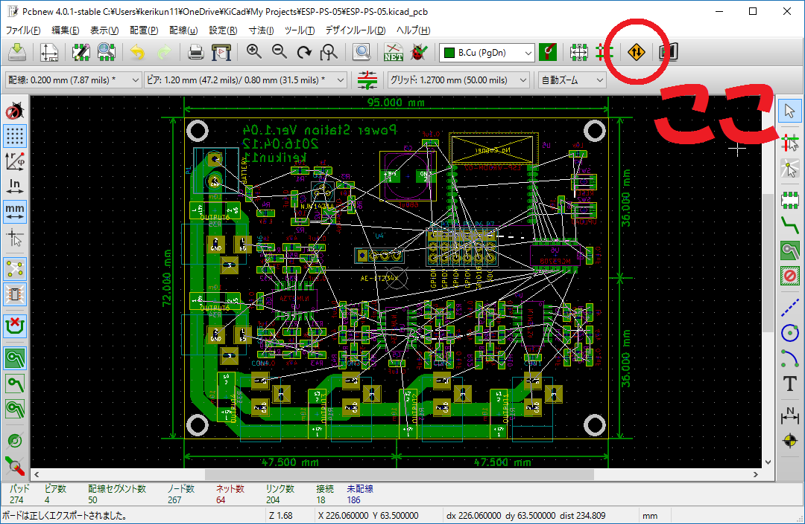
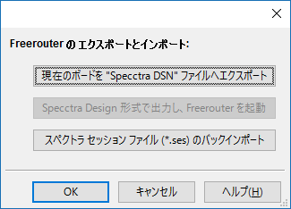
自動配線ツールの起動
- ダウンロードした
Freerouting.exeを起動する。 - 先ほどエクスポートしたdsnファイルを読み込む。
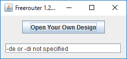
自動配線のパラメータの設定
- 画面上の
ParameterタブからAutorouteを選択する。 - 出てきた画面で
Detail Parameterをクリックする。 - さらに出てきた画面でコストの設定をすることができる。
- 特に、切削基板の場合は、表面(F.Cu)のコストを高く設定する。
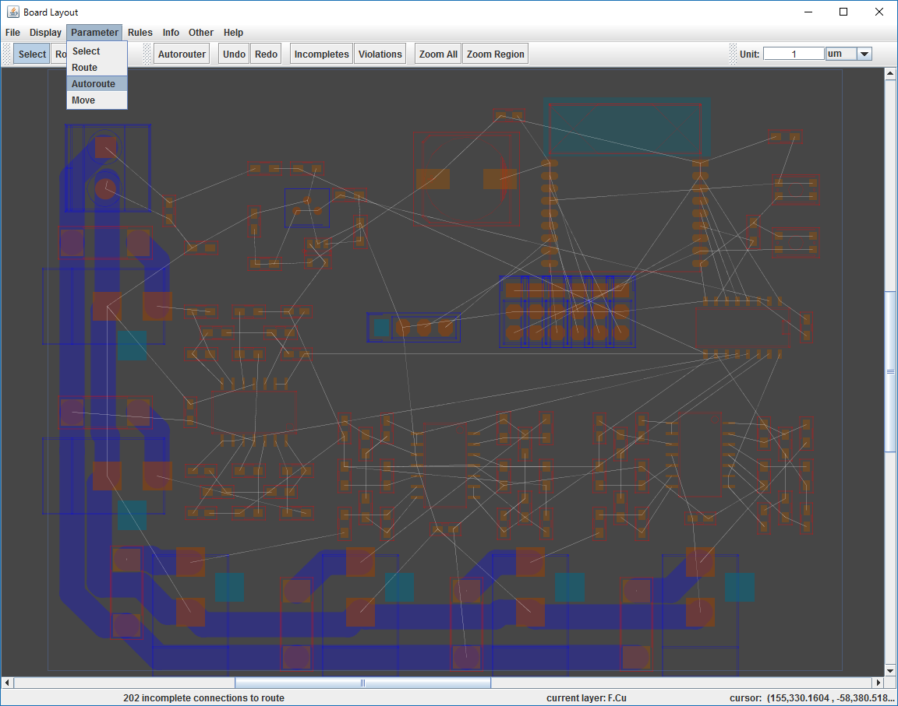 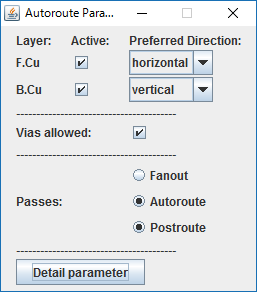 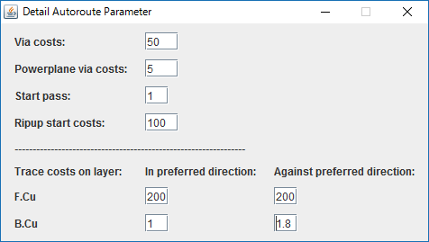
自動配線開始
画面上部のAutorouteボタンで自動配線を開始すると動き始めます。
パソコンのスペックや配線の複雑さによってはかなり時間がかかります。僕の場合長いときは4時間くらいかかりました。
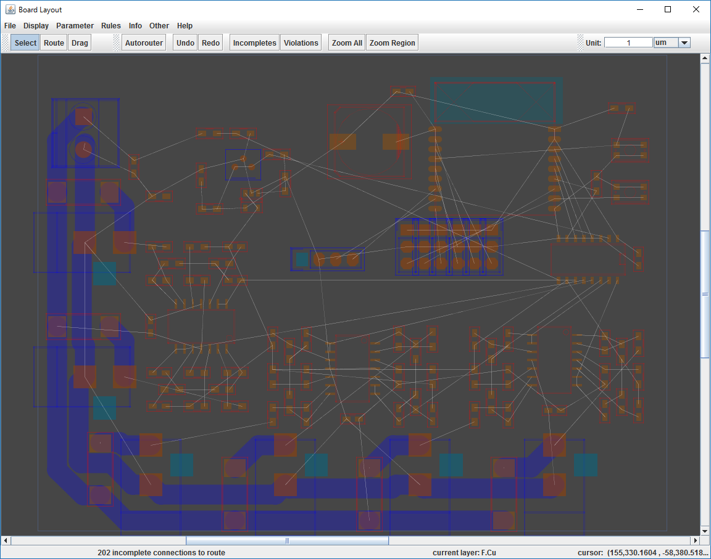
配線結果をsesファイルに書き出し
配線が終わると画面下のステータスバーにRouting Completeと出ます。
そうなったら、メニューバーのFile→Export Specctra Session FIleをクリックしてsesファイルを作成します。
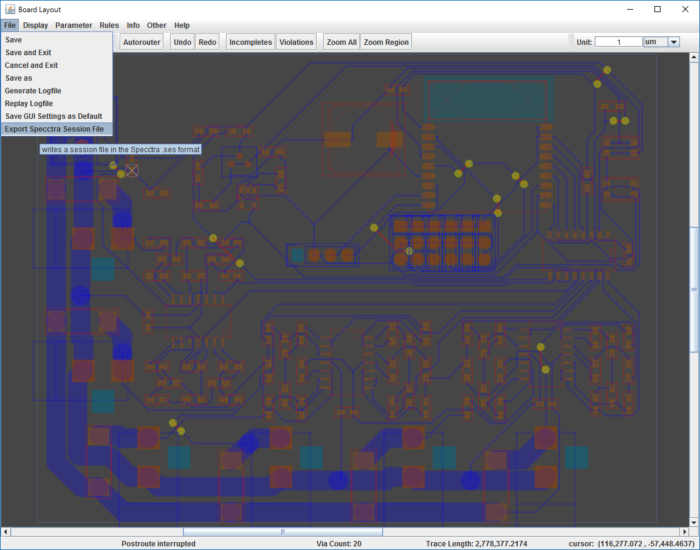
配線結果をKiCadへ取り込む
KiCadに戻り、dsnファイルを書き出した時と同じ画面で今度はsesファイルをインポートしたら完成です。読み込むときに結線情報データを再構築しますか？と聞かれるのではいを押します。
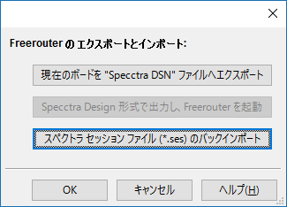 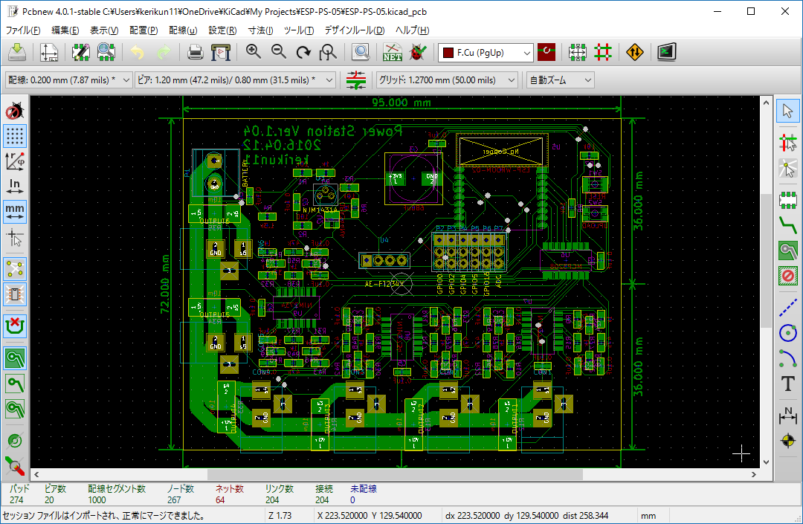
まとめ
手順が多いですが、慣れてしまうとこれなしでは生きていけなくなります。
自動配線ツールを上手に使って効率よく作業を進めましょう！